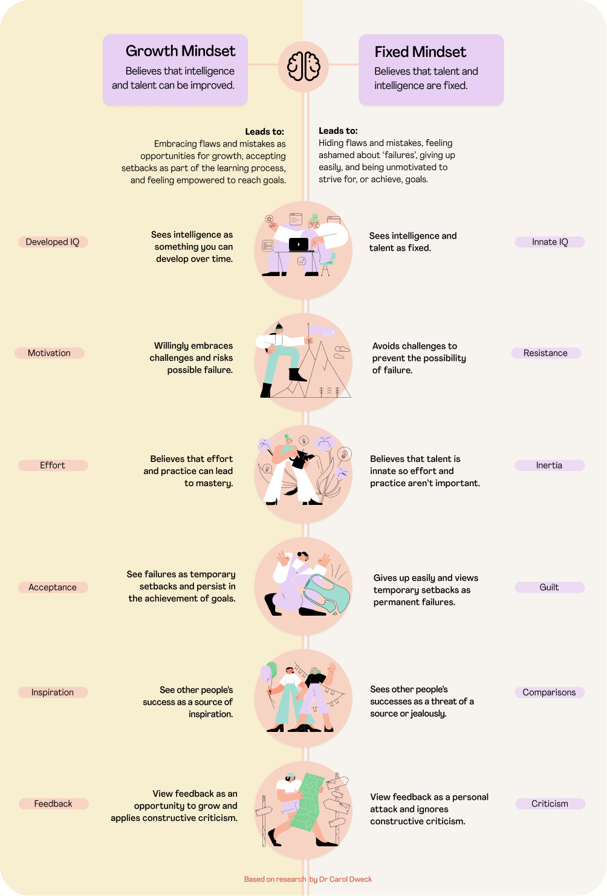

- blog
Neuroplasticity describes a biological process in which the activity of the brain and its responses to stimuli affect the strength or weakness of particular synaptic connections or even the formation of new connections. New connections between our neurones are made as we learn something new. In order to adjust to new situations, we rewire our brains. Daily events like this occur, but we can also promote and accelerate them. Neuroplasticity is incredibly important because it is the root of essential human experiences. Learning and memory, key parts in what it means to be human, would not be possible without this process.
A 2020 study published in JAMA Neurology revealed that engaging in early cognitive enrichment activities, such as learning and participating in extracurricular activities, may decrease the risk of cognitive decline and Alzheimer's disease later in life. Starting these activities at a young age can help build cognitive reserve, which serves as a protective shield against brain damage and disease pathology in later life.
To maximize my engagement with the principles of neuroplasticity, I will actively engage in mentally stimulating activities, such as learning a new language or skill. By studying at Dev Academy, I am continuously challenging myself and pushing myself out of my comfort zone with my learning, encouraging new neural connections to form. Additionally, I plan to incorporate regular exercise into my routine as research shows that it can improve learning and memory, and enhance neuroplasticity. I will also incorporate mindfulness practices, such as meditation, which have been proven to increase brain plasticity and enhance mental well-being. I will also seek out new information and challenge myself by watching TED talks. These efforts will help strengthen neural connections and enhance my overall neuroplasticity
Here is a link to a resource I found interesting
Growth mindset is the belief that abilities and intelligence can be developed through hard work, dedication, and perseverance. This contrasts with a fixed mindset, which is the belief that abilities and intelligence are inherent and cannot be changed. People with a growth mindset see challenges and failures as opportunities for growth, whereas people with a fixed mindset tend to avoid challenges and see failures as permanent setbacks. Research has shown that individuals with a growth mindset tend to perform better academically, have greater resilience in the face of setbacks and failures, and are more likely to engage in challenging activities that promote personal growth.
Developing a growth mindset can lead to improved motivation, increased persistence, and greater success in various domains, including education, sports, and career. This concept has been popularized by psychologist Carol Dweck, who has conducted extensive research on growth mindset and its impact on performance and well-being. Growth mindset is relevant to learning because it can significantly impact how individuals approach and engage with learning experiences. A growth mindset can promote a more positive and proactive approach to learning, as individuals with a growth mindset view challenges and failures as opportunities for growth and improvement.
Research has shown that those with a growth mindset are more likely to persevere in the face of difficulties, seek out new challenges, and view mistakes and failures as opportunities to learn and grow. They are also more likely to take an active and engaged approach to learning, seeking out feedback and help when needed. In contrast, those with a fixed mindset may avoid challenges and be more likely to give up in the face of difficulties. They may also view mistakes and failures as a reflection of their inherent abilities and limit their own potential for growth and improvement. Therefore, fostering a growth mindset in ourselves can have a significant impact on our motivation, engagement, and academic success.
This exploration emphasizes how important it is to focus on the mental side of things. It’s so easy to forget that when you’re studying and trying to focus on getting everything right. But when you take a step back, and look at it, it’s all about your mindset. This exploration is pushing me to be even more focused on my mental state and to actively focus on the growth mindset through my learning journey. Focus on my goal, dedicate the time to it, and completely commit.
I will be integrating the growth mindset in my learning journey with these steps. I will be continuing to embrace the challenge, instead of avoiding difficult tasks, or challenges, I will view them as opportunities for growth and improvement. I will continue to seek out new challenges and take on tasks that are outside my comfort zone. Embracing mistakes, they are the way I learn, an opportunity for me to learn and grow, rather than as failures. By focusing on progress not perfection, I will be consciously mindful of not being discouraged by setbacks and focus instead on the progress I have made, and the effort I have put in. I will celebrate my achievements and recognize that growth does take time and dedication. I will seek out constructive feedback from others, such as my peers and advisors, this will help me identify areas for improvement and opportunities for growth. I will consciously ensure that I am surrounding myself with positive and supportive people who encourage a growth mindset, and seek out resources and books that promote this way of thinking. For instance, rather than watching netflix when making dinner, I will watch Ted talk.
Here is a link to a resource I found interesting
I am eager to put these principles into practice and enhance my life, not only at Dev Academy, but also in the future work place as a Developer, and life in general. It's easy to get caught up in the hustle and forget that it all starts with a growth mindset. Taking a step back, I realize that my entire learning journey, both in Dev Academy and in life, is dependent on my mindset. Scientific research proves that our brains have the capacity to grow and adapt, but this only happens when we possess a growth mindset. To foster this mindset, I will embrace challenges, welcome mistakes as opportunities to learn and grow, and reward myself for persevering and reaching my goals. For example, after completing a difficult task, I might treat myself to a cup of chai and a muffin. Additionally, I am incorporating mindfulness into my daily routine to improve my attention, memory, and emotional regulation, which will ultimately support my learning journey. I am fully aware that the mind is a powerful tool and it's up to me to shape it to achieve my desired outcomes. By adopting a growth mindset, I am confident that I can transform my learning journey and achieve greater success in all aspects of my life.